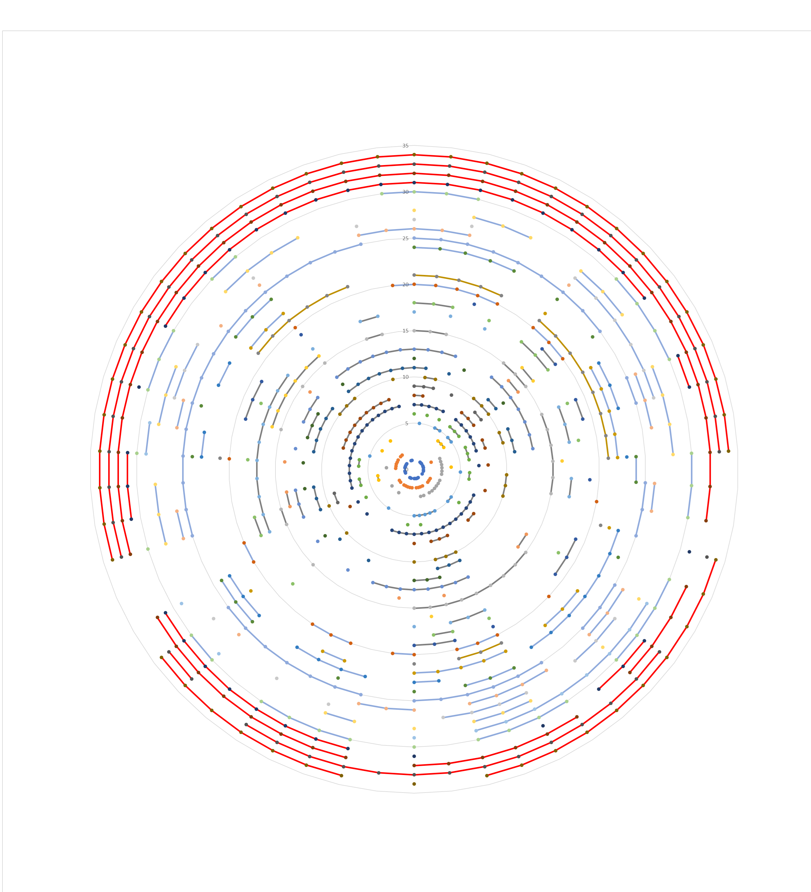
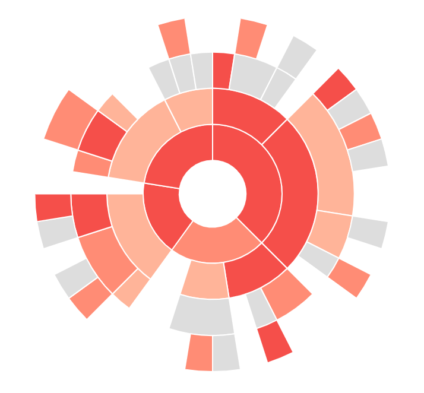
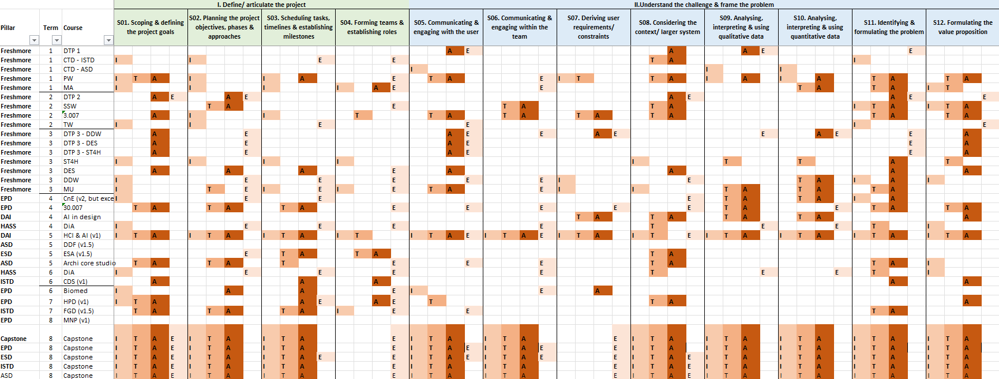

This diagram is created to show the list of design competencies taught in school, throughout the undergraduate period. There are 3 components presented: 1) list of courses, 2) list of design competencies, and 3) whether the competencies are being introduced/ taught/ assessed/ expected in the courses.
The diagram shows the list of courses as circle radiuses and the list of competencies are in the outermost circumference. If the competencies are taught in a class, a 'dot' will be marked on that course's radius. The lines of the same color marks the courses are in the same term.

Pros:
The visualisation is able to show "gaps" in the curriculum at a quick glance, where the lines are not connected
Cons:
Too much information, leading to no information. As there are a lot information happening, there is no space to annotate what means what, this results in the diagram to be meaningless. In fact, the author needs to describe what the diagram do in another paragraph, and the paragraph is not a short one.
As such, the words for list of competencies cant be fit into the outermost circumference of the circle. So eventho we can identify the gaps, we cannot identify what the gap is.
In my opinion, the colours make it less readable. One colour for each course, and yet they are connected by different coloured lines, may make the "dot" to indicate the course itself to be not visible.
The size of the image needs to be humongous to have the inner circles readible. Legibility is a huge problem.
Suggestion:
Colors and especially the coloured lines are chart junk to me, can remove them. Reduce the amount of information that is being shown. If the purpose of the visualisation to show the missing gaps, considering a sunburst diagram below is better and easier to locate the gaps.

The diagram shows the list of courses as rows and list of competencies as columns. Each competency is divided into 4 sections introduced (I), taught (T), assessed (A), and expected (E). The diagram is also made to show gaps in the curriculum in a table format.

Pros:
The data is much more visible. People can easily identify the gaps, trace it back to which competency is it and which courses did not teach it.
The competencies are differentiated by colors, to differentiate their different stages in a design process. A good information to add without disrupting the main information to be portrayed
Cons:
The light colours may be too light for me. May misread it as gaps. This can easily solved by better choice of colours.
The visualisation is not effective for long list of competencies/ courses as the reader need to scroll sideways/ downward for full information. However, as the competencies are already split based on their design stages, focused information can be shown. For example, only to show information one design stage or for courses in 1 term instead of full duration.